Vértice Restaurant
Del garzón que comanda a la caja que cobra y cierra el día. Cada paso, con la pantalla real.
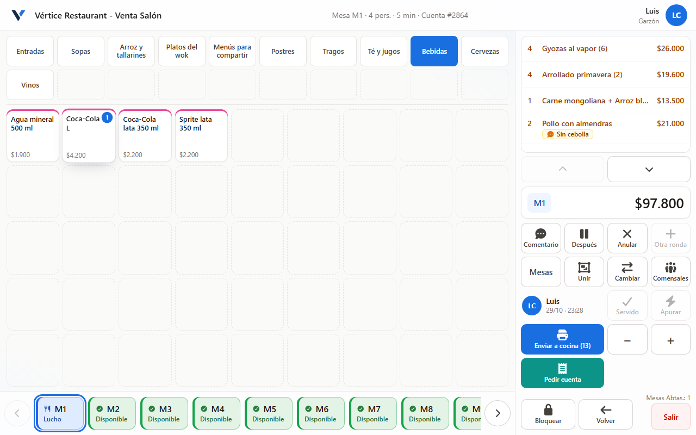
Gracias por elegirnos
Sabemos que cambiar de sistema en plena operación no es menor, y queremos que estos primeros días sean tranquilos para todo el equipo. Esta guía cuenta el viaje completo de un servicio: léanla juntos antes del primer turno, y cada persona encontrará qué le toca a ella.
Todo pedido pasa por el sistema. Si algo se anota en papel o se pide de palabra a la cocina, la cuenta de la mesa queda incompleta y el cierre de caja no cuadra.
El viaje de un servicio
- Abrir cajaCajero
- ComandarGarzón, con su código
- PrepararCocina y barra
- Pedir cuentaGarzón; sale en caja
- CobrarCajero
- Por limpiarLista para el siguiente
- Cerrar cajaCajero, al final del día
Los pasos 2 a 4 se repiten en cada mesa; el 1 y el 7, una vez al día.
El equipo y los equipos
Cada persona entra con lo suyo y ve solo lo que necesita.
El código de cada garzón es personal y no se presta: con él el sistema sabe quién atendió cada mesa y a quién le corresponde la propina.
Antes de abrir
El día empieza en el servidor y termina con la caja abierta. Sin caja abierta no se puede cobrar.
Encender en orden
Primero el servidor, y esperar a que Vértice abra completo. Después las impresoras de cocina, barra y caja, revisando que tengan papel. Al final la caja y los POS de garzones, que se conectan solos y muestran el mapa de mesas.
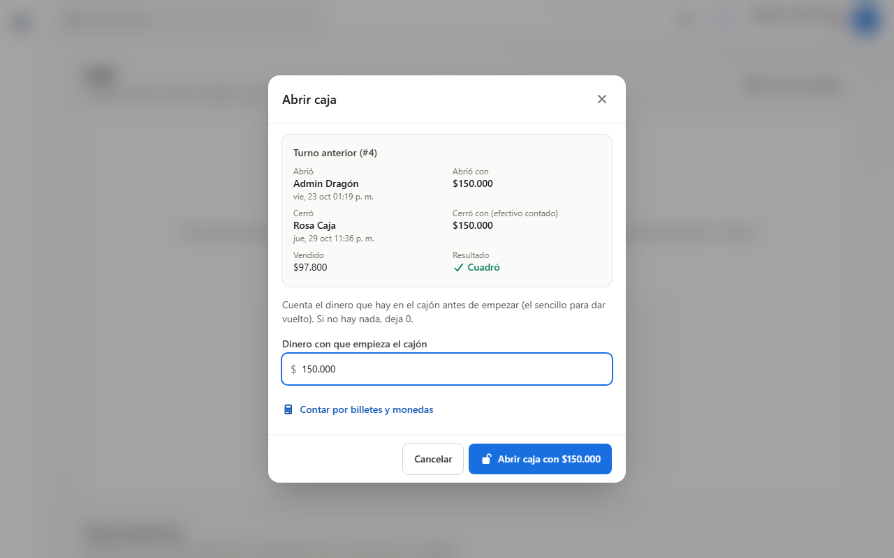
Abrir caja
El cajero va a Caja → Abrir caja, escribe el dinero con que empieza el cajón (el sencillo para dar vuelto) y toca Abrir caja con $…. Arriba ve cómo cerró el turno anterior.
Revisar la carta
Si un plato se agotó, el administrador lo marca como agotado para que los garzones no lo ofrezcan.
El garzón toma la comanda
Tocar la mesa, escribir el código, elegir los platos y enviar a cocina.
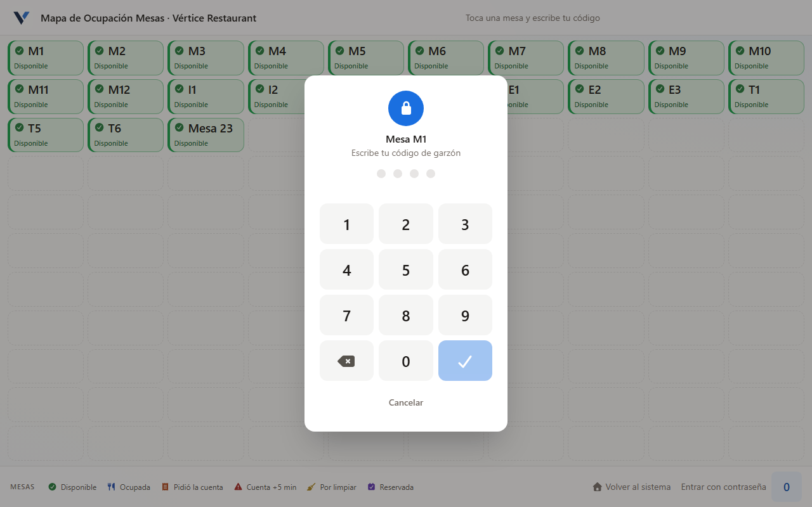
Tocar la mesa y escribir su código
Toca la mesa donde se sentó la gente, escribe su código de 4 números (PIN) y toca el visto azul. La mesa queda a su nombre.
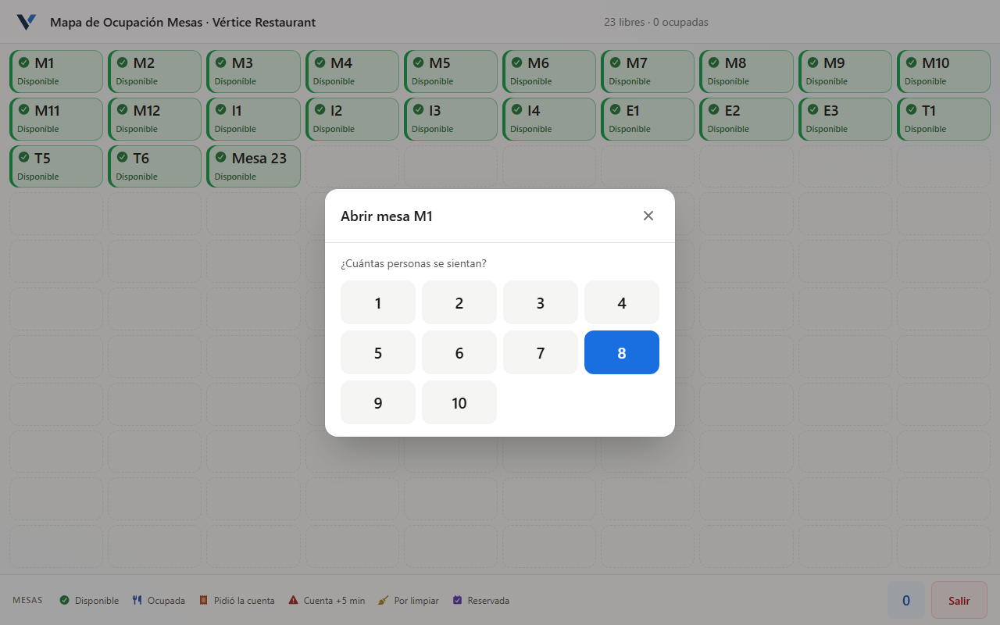
Cuántas personas se sientan
Solo la primera vez que se abre la mesa. Si después llega o se va alguien, se cambia con Comensales.
Elegir los platos
Arriba las familias (Entradas, Sopas, Bebidas…), al medio los productos con su precio. Cada toque suma una unidad y el número azul dice cuántas lleva. A la derecha se arma el detalle: lo nuevo sale en color, todavía sin enviar. Con − y + se cambia la cantidad.
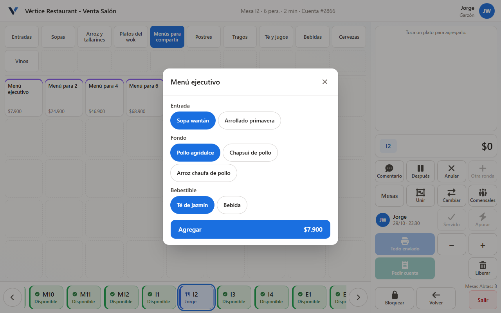
Responder lo que pregunte el plato
Algunos platos piden elegir: el menú con entrada, fondo y bebestible, un tamaño o un agregado con precio. Agregar se activa cuando todo está respondido.
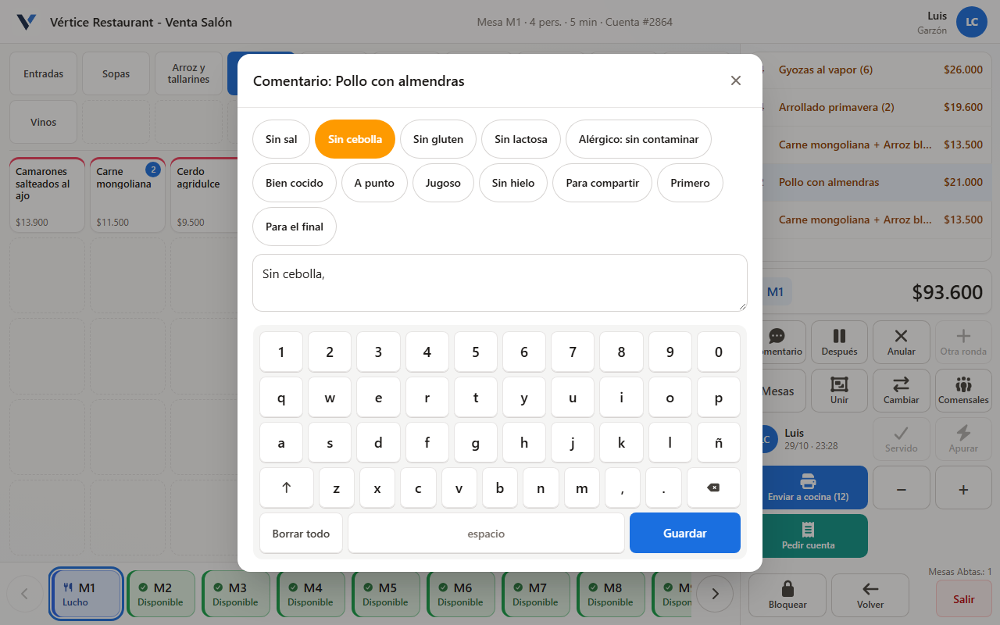
Agregar un comentario
Tocar el plato en el detalle y luego Comentario. Hay comentarios rápidos (Sin cebolla, Bien cocido, Sin hielo…) y un teclado en pantalla. Guardar: sale impreso en la comanda.
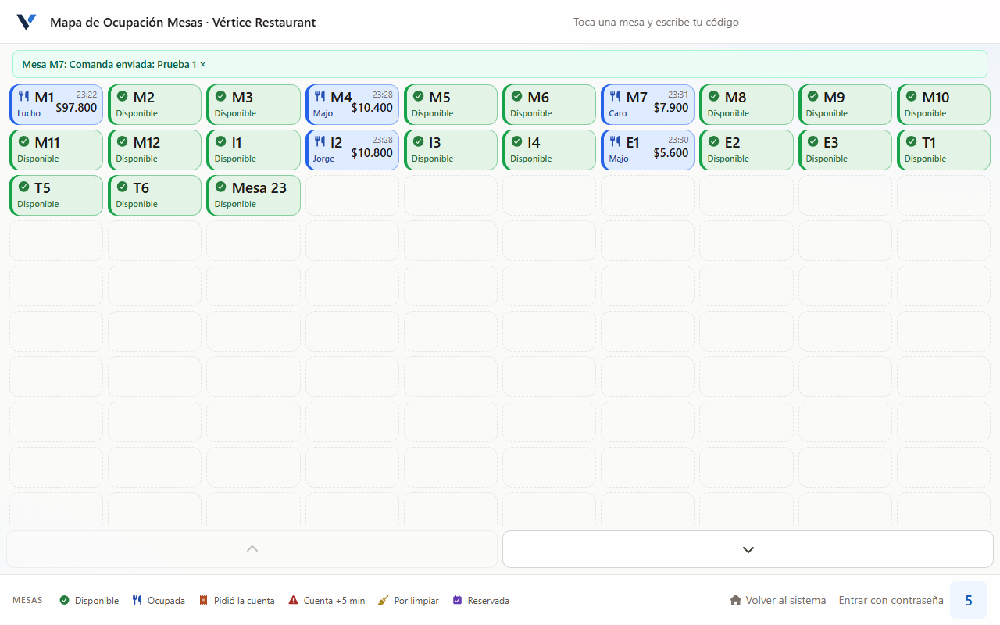
Enviar a cocina
El botón azul Enviar a cocina dice cuántas unidades faltan. Al tocarlo, cada plato se imprime en su sector y el POS vuelve al mapa con el aviso verde «Comanda enviada». La mesa queda ocupada con su hora, total y garzón.
Lo que no se envió no llega a la cocina. Si el garzón deja la mesa sin enviar, el POS vuelve solo al mapa a los pocos segundos. Antes de irse de la mesa, siempre enviar.
Estados de la mesa
Disponible, Ocupada, Sin pedir, Pidió la cuenta, Cuenta +5 min, Por limpiar y Reservada. Cada estado tiene su color e ícono; la leyenda está siempre al pie del mapa.
Cocina y barra
Cada sector recibe solo lo suyo, impreso en su impresora.
Si se queda sin papel o se desconecta, el POS avisa y la comanda se puede reimprimir. Nunca preparen de memoria un pedido que no salió impreso.
Durante el servicio
La mesa se sigue trabajando hasta que se cobra.
La caja ve y cobra todas las mesas, pero no les agrega ni les quita platos: eso lo hace el garzón de la mesa. Anulaciones y cortesías quedan registradas y aparecen en el cierre de caja.
La cuenta y el cobro
El garzón la pide, sale impresa en la caja y la caja cobra. Al pagar, la mesa queda libre.
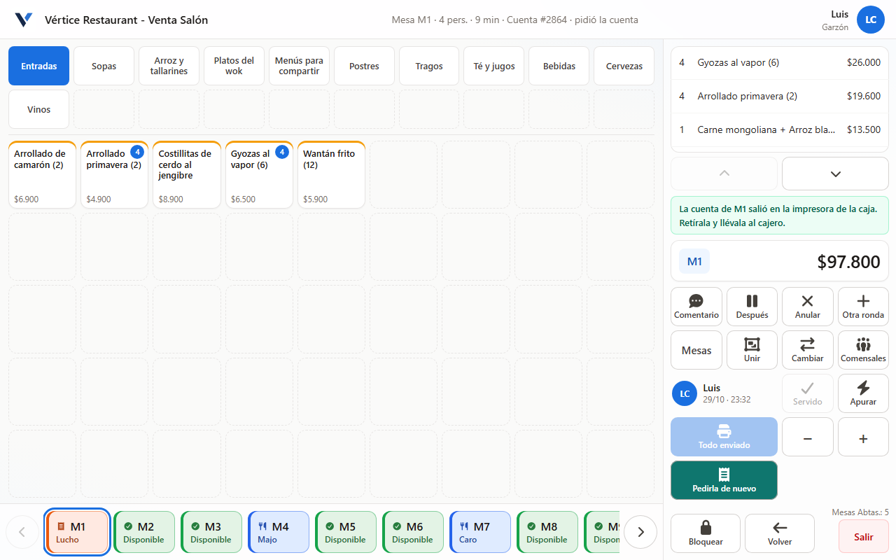
El garzón toca «Pedir cuenta»
La cuenta se imprime sola en la caja, con su número grande (Cuenta #2864) y la propina sugerida. La mesa pasa a «Pidió la cuenta». Si se perdió el papel, Pedirla de nuevo la reimprime. El garzón la retira en la caja y la lleva a la mesa.
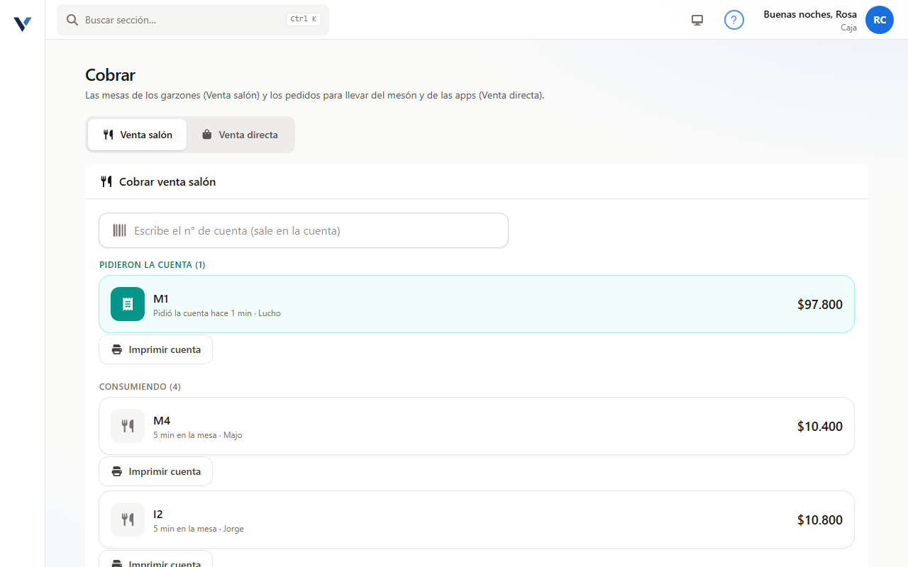
La caja abre «Cobrar»
Arriba están las mesas que pidieron la cuenta y más abajo las que siguen consumiendo. Se toca la mesa o se escribe el número de la cuenta impresa.
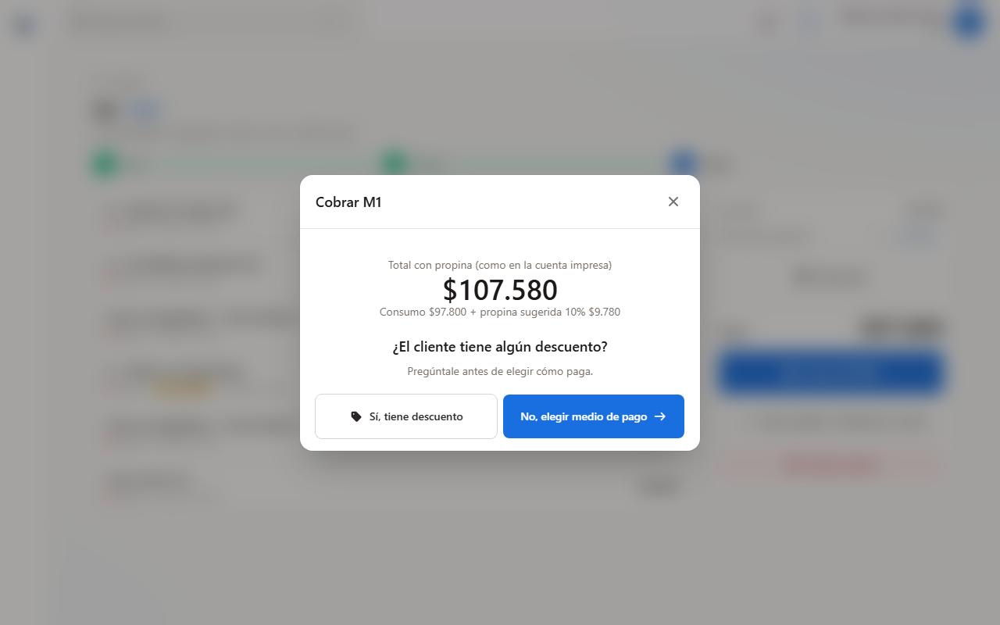
Preguntar por descuento
El sistema muestra el total con la propina sugerida (10%) y pide preguntarle al cliente si tiene algún descuento antes de elegir cómo paga.
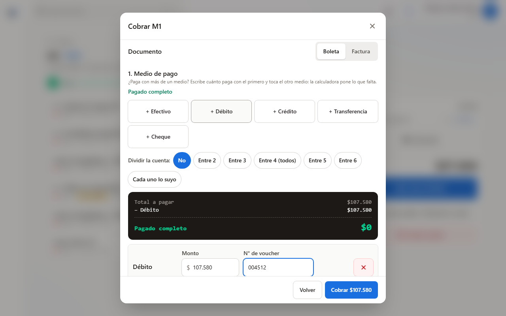
Documento y medio de pago
Boleta o factura; luego Efectivo, Débito, Crédito, Transferencia o Cheque. Con dos medios, se escribe cuánto va con el primero y se toca el otro. Con tarjeta se anota el n° de voucher. Aquí también se divide la cuenta (entre 2, 3… o cada uno lo suyo). Se termina con Cobrar $….
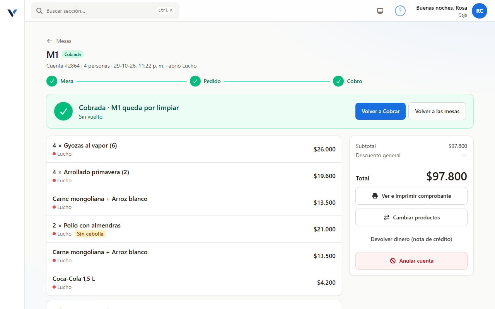
Cobrada y por limpiar
La cuenta queda «Cobrada» y la mesa «por limpiar» hasta que se vuelve a sentar gente. Desde aquí se ve o imprime el comprobante.
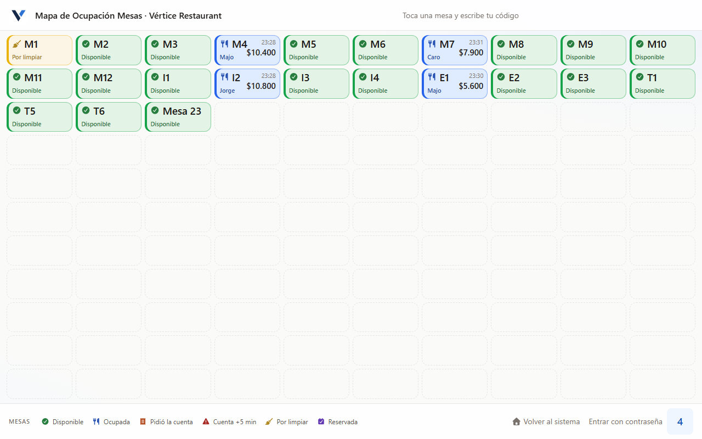
La mesa aparece con la escoba
En el mapa del garzón, la mesa cobrada muestra «Por limpiar». Al sentar gente nueva vuelve a empezar el ciclo.
El mesón toma el pedido en la caja (Venta directa: Mesón o App de delivery), lo envía a cocina y lo cobra. Uber Eats, Rappi y PedidosYa quedan pagados por la app, con su código.
Cierre del día
Todas las mesas cobradas y la caja cuadrada en tres pasos.
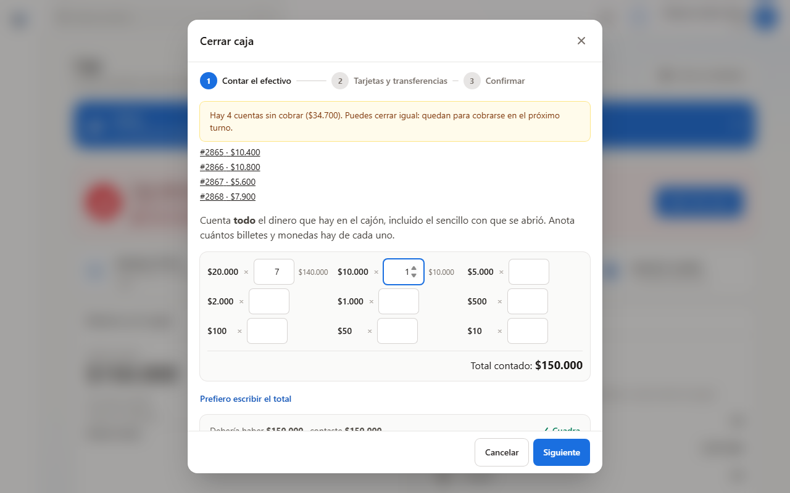
Contar el efectivo
En Caja → Cerrar caja se anota cuántos billetes y monedas hay de cada uno, incluido el sencillo con que se abrió. Si quedan cuentas sin cobrar, el sistema las muestra arriba: cóbrenlas antes de cerrar.
Tarjetas y transferencias
Sacar el cierre del datáfono (el voucher de totales) y compararlo con lo que dice el sistema para débito, crédito, transferencias y cheques.
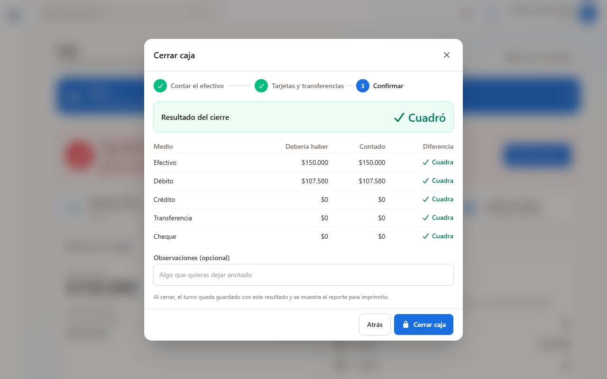
Confirmar
El sistema muestra si la caja cuadró, medio por medio. Si no cuadra, hay que anotar qué pasó y solo un administrador puede autorizar el cierre con su código. Al tocar Cerrar caja el turno queda guardado y sale el reporte.
Primeros días y problemas frecuentes
La primera semana se aprende haciendo. Esto evita los tropiezos más comunes.